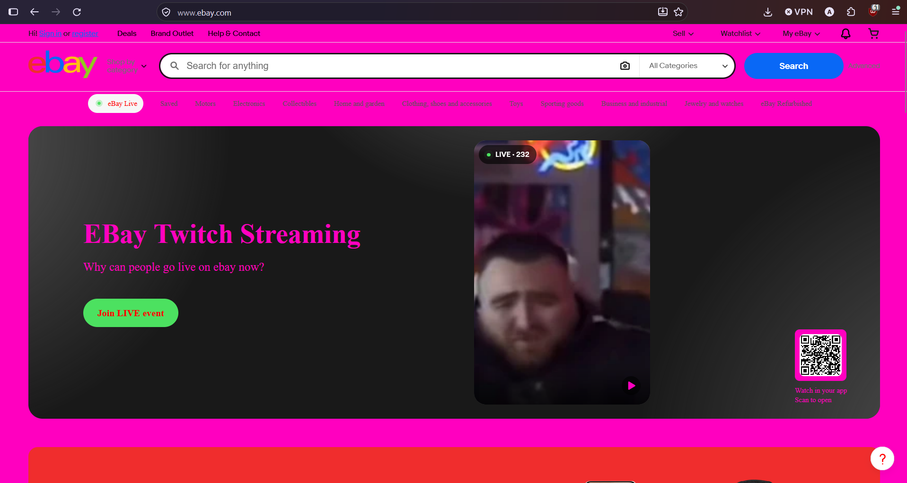

My Dev Tools Vandalism
I used browser developer tools to temporarily "vandalize" a website. Below is a screenshot showing my changes. These edits only appeared on my computer and did not affect the actual website.

What I "Vandalized"
Describe the changes you made to the website using the browser's developer tools. Some potential questions to consider:
- What text did you edit? I editted the main text at the top of the page
- What CSS properties did you modify? I modified font family, backgroudn color, and an image on the displayed stream
- What made your edits interesting or amusing? I thought it was funny to see that ebay did livestreams for products, so I replaced the image of the headline stream with a different image of a twitch streamer
- Did you understand why some changes worked and some didn't? Yes, I understand that I couldnt easily change the font if it wasnt already a part of the website, so I did not change it to comic sans like I had intended
- Why did you choose the changes you did?I wanted to make it so that it was clearly edited and visually unappealing with bright colors, while also mentioning something I found weird about the website anyways
- Were you able to understand how the HTML and CSS worked together to make the changes you made? Yes, I was able to see how the HTML structure and CSS styles worked together.
- Do you think you have a better sense of how dev tools can be used while crafting your own webpages? Yes, I do.